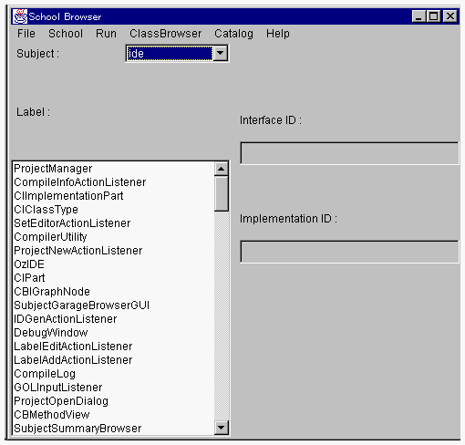
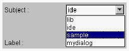
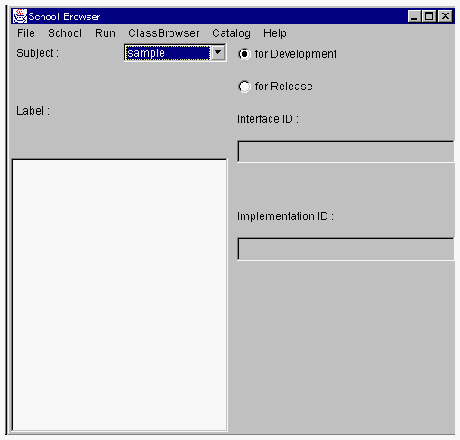

| |
スクールブラウザはOZ IDEを起動すると表示されます。

スクールブラウザのメニューバーには、6つのメニューがあります。
1つのメニューリストと3つの表示エリアは、それぞれ次の情報が表示されます。
| Subject: |
サブジェクトを選択します。そのサブジェクトの情報が以下の表示エリアに表示されます。 | ||
| Label: |
サブジェクトを構成するクラスの名前が表示されます。 | ||
| Interface ID: |
Labelリストで選択されたクラスのインタフェース部識別子が表示されます。 | ||
| Implementation ID: |
Labelリストで選択されたクラスの動作部識別子が表示されます。 |
Subject メニューで lib、ide 以外のサブジェクトを選択すると、ラジオボタンが表示されます。これはクラス識別子を開発用あるいはリリース用に切り替えるためのものです。


（ラジオボタンを持つスクールブラウザ）
| |